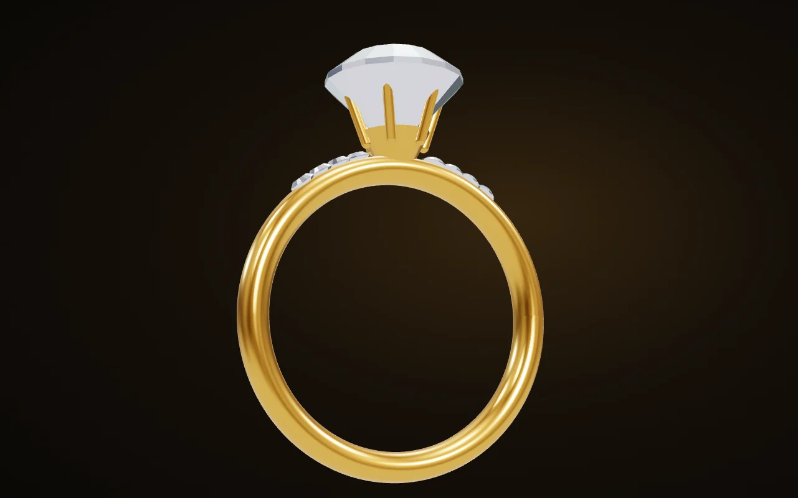
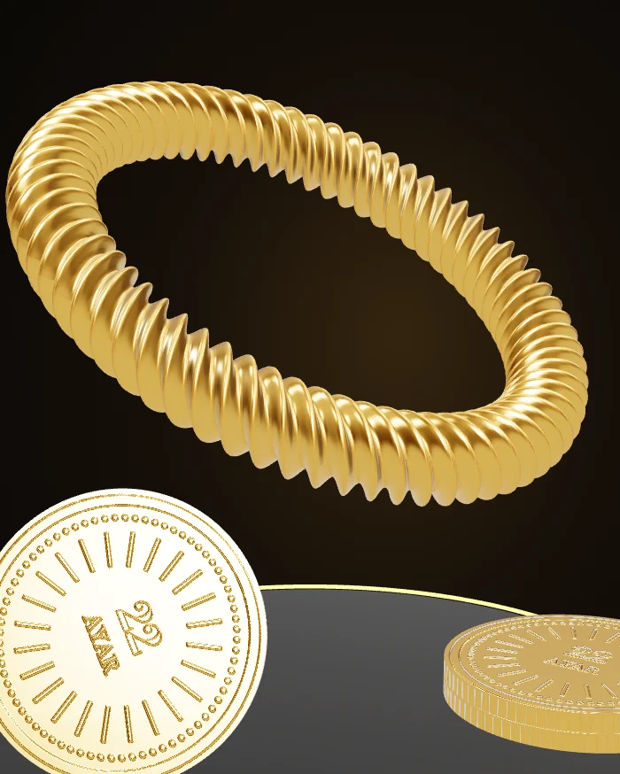
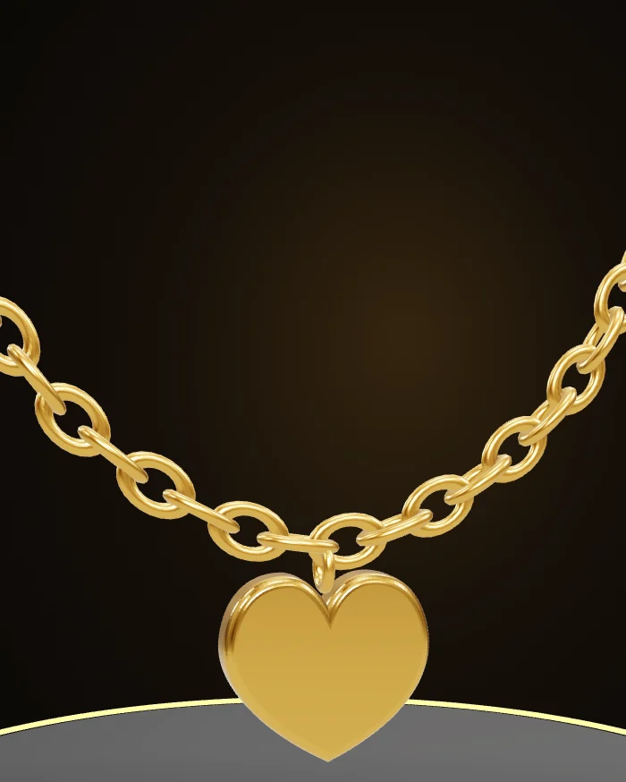
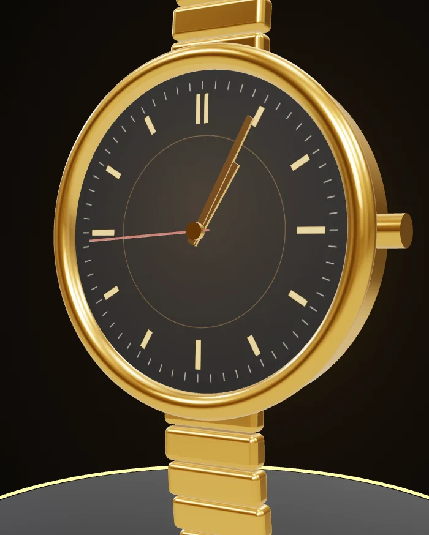
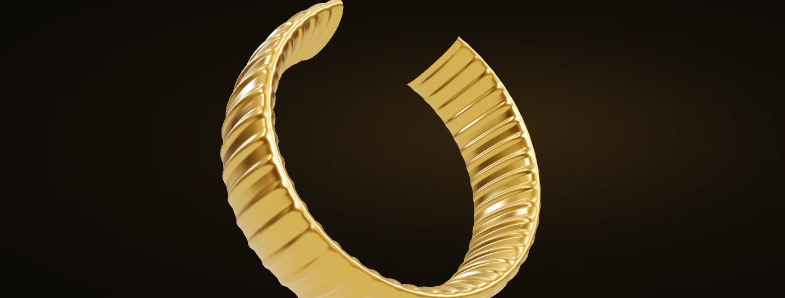

Canlı piyasa
Bugün altın
Piyasa verisi, yaklaşık her dakika yenilenir. Mağaza satış fiyatı için bizi arayın.
Koleksiyon
Vitrinde neler var





Özel anlar
Her anın kendi parıltısı
- I
Söz ve nişan
Tektaş ya da beştaş yüzük, nişan seti. Ölçü ve model seçimi için mağazaya uğrayın.
- II
Düğün
Alyans, düğün takısı, burma bilezik ve takı seti. Bütçenize göre birlikte hazırlarız.
- III
Doğum
Çeyrek altın, bebek bileziği ve isimli kolye. Yeni gelen için kalıcı bir hediye.
- IV
Yıldönümü ve sevgililer günü
Kalp kolye, ince bileklik, kol saati. Özel günlerde buket seçenekleri de olur.
- V
Birikim
Gram, çeyrek, yarım ve tam altın. Güncel fiyatı yukarıdaki tablodan izleyin, alım için arayın.
Rehber
Zincir seçerken neye bakmalı?
Her zincirin dayanıklılığı, tarzı ve kullanım amacı farklıdır. Yanlış seçim hem konforu düşürür hem de zincirin ömrünü kısaltır.
Forse
Birbirine dik geçen oval halkalar. Sade ve sağlam; kolye ucu taşımaya uygundur.
- Kullanım
- Günlük, kolye ucuyla
- Tarz
- Klasik
Gurmet
Yassılatılmış, iç içe yatan halkalar. Düz durur, ışığı geniş yüzeyden yansıtır.
- Kullanım
- Tek başına, bileklik
- Tarz
- Gösterişli, erkek modellerde sık
Halat
Halkalar burgu gibi dönerek örülür. Hacimli görünür, ışıkta parlar.
- Kullanım
- Tek başına, kat kat
- Tarz
- Dikkat çekici
Venedik
Kare kutu biçimli halkalar. Düzgün ve dayanıklı; ince modelleri de kolay bükülmez.
- Kullanım
- Günlük, kolye ucuyla
- Tarz
- Modern, sade
Singapur
Dalgalı, esnek örgü. Boyuna yumuşak oturur, hareketle ışık oynar.
- Kullanım
- İnce, zarif kolyeler
- Tarz
- Feminen
Mağaza
Oasis'te buluşalım
Cumhuriyet Mah. Kıbrıs Şehitleri Cad.Oasis Alışveriş Merkezi
48400 Bodrum / Muğla
- Saatler
- 10:00–19:00
- Telefon
- 0252 317 19 08
Harita yükleniyor